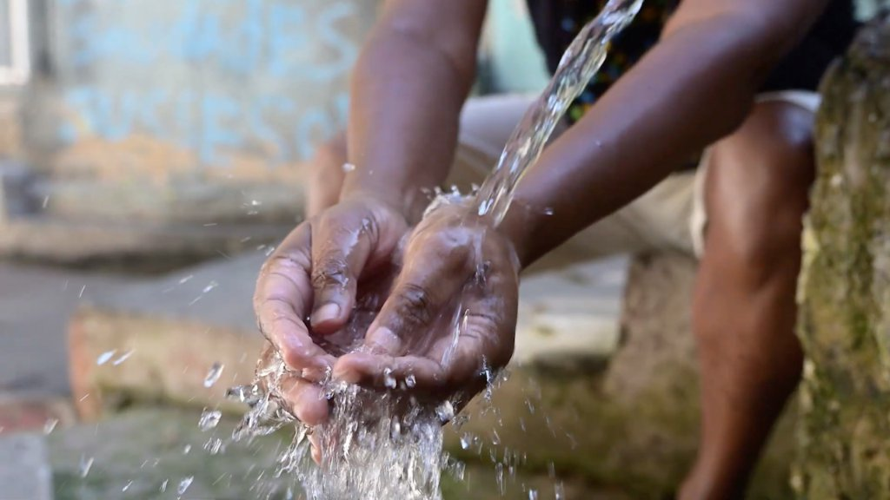
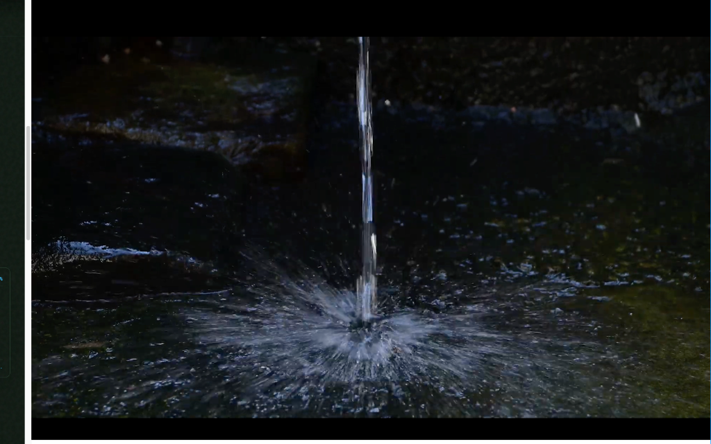
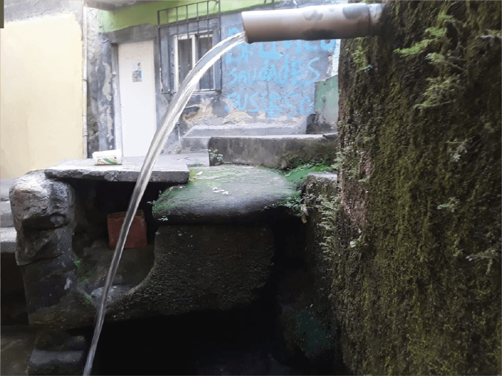
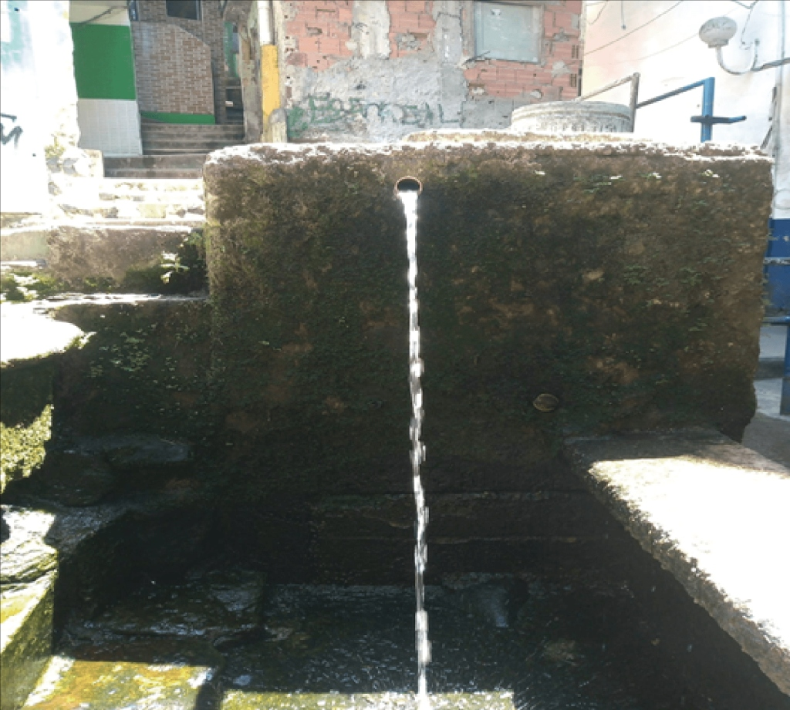
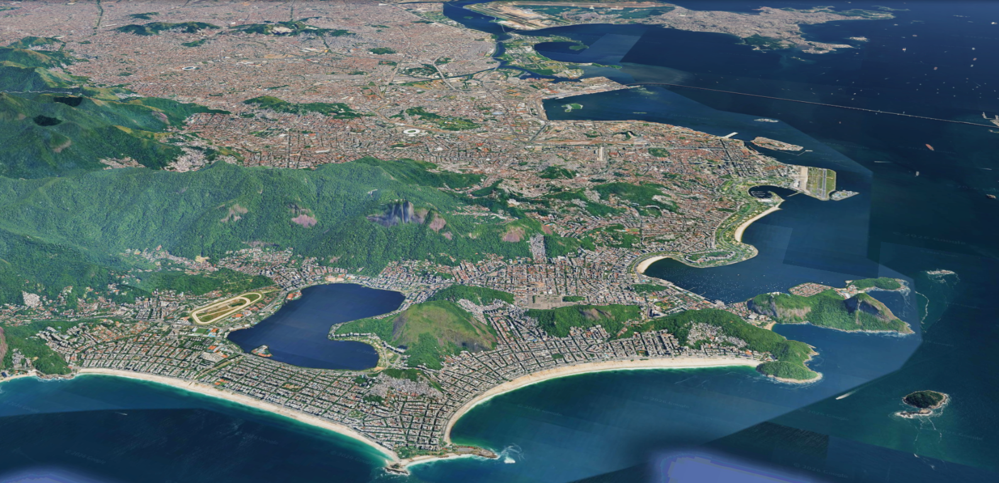

MINA
A história de um povo que corre no fio de uma nascente.
No coração da rocha do Morro Santa Marta, a água não foi apenas sobrevivência: foi o fio que forjou laços de solidariedade, reuniu vizinhos e escreveu a história de uma comunidade inteira.

O Santa Marta tem muitas histórias e locais que precisam ser preservados e destacados, principalmente para que os jovens de agora e os que vierem depois possam conhecer esses lugares de memória. Aqueles que já nasceram na Favela com água e luz e, também, os visitantes de hoje, precisam conhecer a nossa história e as nossas referências locais. Esse é o nosso jeito de afirmar nossa identidade e valorizar um lugar que é nosso.
A MINA D'ÁGUA
D'ÁGUA — FONTE DA VIDA

“Só quem viveu sabe o valor dessa foto.”
“Saudade da minha infância aí nessa Mina. Bons tempos.”
“Tomei banho nessa Mina.”
Antes dos canos e do asfalto, havia a sede e havia a floresta. No coração da rocha do Morro Santa Marta, brotou a mina d'água que sustentou famílias, reuniu vizinhos, forjou a solidariedade e deu origem à Associação Escola Sem Muros e ao Grupo ECO.
Era comum o som do canecão, feito de lata vazia de óleo ou de leite em pó raspando o buraco de pedra em formato de cuia para encher uma lata de vinte ou de quinze litros carregadas até as casas.
No verão, as fontes minguavam e a disputa para conseguir uma lata de água era dramática. A fila na Mina se estendia até a madrugada. Quem chegava primeiro ajudava quem vinha com as latas equilibradas na cabeça subindo as vielas íngremes de terra e pedra.
“A mina não dava apenas água. Ela ensinava a dividir, a esperar a vez do vizinho, a carregar junto. Foi carregando água que aprendemos a carregar o destino da nossa própria comunidade.”
Naquela época não havia iluminação pública no Santa Marta e os caminhos eram muito escuros. Muitas histórias de assombração viraram lenda da favela: a mulher do latão, a mulher de branco, o lobisomem e tantas outras lendas contadas na fila da bica sob as estrelas.
CINCO HISTÓRIAS. UMA MESMA NASCENTE.
Cada pessoa guarda uma lembrança diferente. Para alguns, a Mina era necessidade. Para outros, encontro, brincadeira, trabalho ou resistência. São diferentes olhares sobre um mesmo lugar e uma mesma história coletiva.
A fila da bica como primeira assembleia do morro
Itamar Silva narra como a falta de água unia as pessoas na comunidade e transformou a mina natural no epicentro da convivência diária: na espera com as latas na cabeça, nasceram os primeiros laços de luta e o embrião do Grupo ECO.
 00:00
00:00
 00:32
00:32
 00:07
00:07
 00:12
00:12
 00:04
00:04

A CAIXA D'ÁGUA DE PEDRA E O FLUXO CONTÍNUO QUE NUNCA CESSA
Hoje os tempos são outros. A Favela tem luz elétrica e a água chega a todas as casas. Mas no coração de pedra da montanha, o fluxo primordial nunca secou.
MAPA MURAL
A MINA E O TERRITÓRIO QUE A ABRIGA

Contexto Metropolitano · Botafogo
Entre o Maciço da Tijuca e a enseada de Botafogo, o Morro Santa Marta ergue-se com sua história secular e sua nascente que há gerações abastece os moradores.
O Projeto do Mapa Muro
“O nosso objetivo é jogar luz neste ponto da Favela. Para isso, vamos fazer um painel na parede da casa do Seu Carlos (pai da Luciana), ao lado da Mina e construir um Mapa Muro, onde estará indicada a localização da Mina. Ao lado do Mapa, queremos que representantes de algumas instituições da Favela façam um desenho de livre escolha, e deixem ali sua marca. A ideia é que as pessoas, ao olharem este Mapa Muro, além de ver a silhueta da Favela e a indicação de onde fica a Mina, também contemplem a diversidade de instituições que atuam no Santa Marta.”
“Afirmar nossa identidade e valorizar um lugar que é nosso.”
“Da Mina jorra, sem parar, a água boa para beber e a água cristalina da nossa memória.”